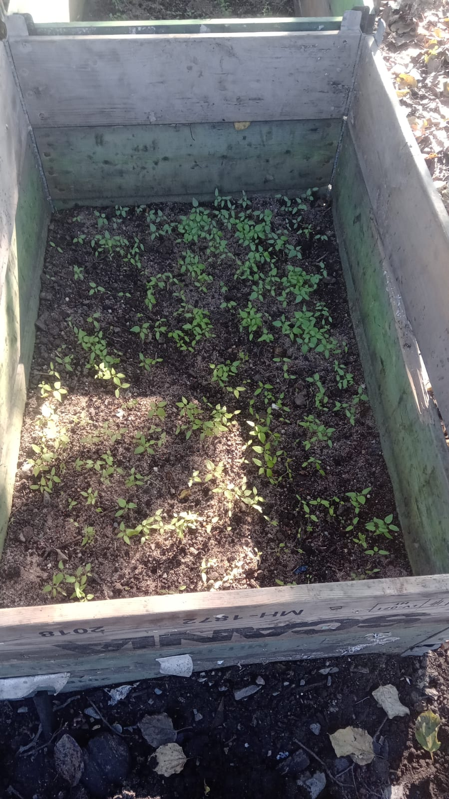
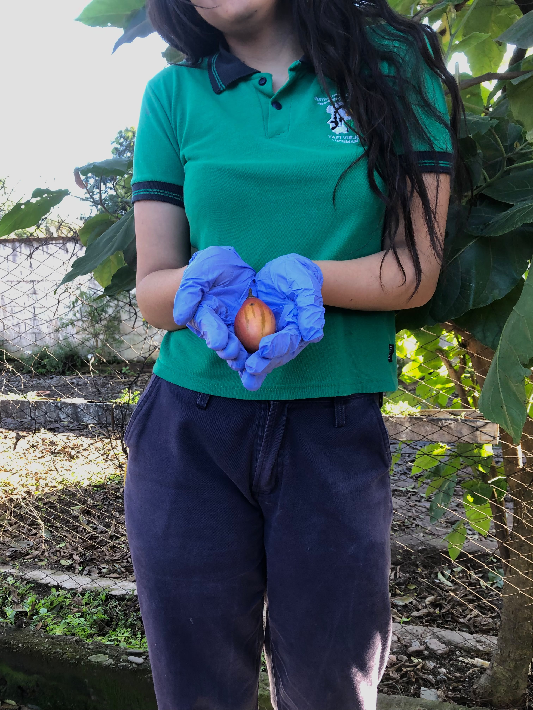

Tomate de árbol, Chilto
Instituto Agrotécnico Obispo Colombres
🎥 VIDEO 01
Reproducción a través de semillas
La reproducción por semillas es el método natural de propagación del tomate de árbol. Las semillas se extraen de frutos maduros, se lavan y se secan a la sombra antes de la siembra. La germinación ocurre entre los 15 y 30 días, dependiendo de las condiciones de temperatura y humedad.
📷 FOTO — Reproducción a través de semillas

Reproducción a través de estaca
La reproducción por estacas (esquejes) es un método de propagación vegetativa que permite obtener plantas genéticamente idénticas a la planta madre. Se seleccionan ramas semileñosas de aproximadamente 20-30 cm, se eliminan las hojas inferiores y se colocan en un sustrato húmedo para promover el enraizamiento.
Videos — Reproducción
Fruto: Colorimetría y madurez
El color naranja es el que indica el color maduro del chilto. La escala de colorimetría es: verde, lila, rojizo o rojo y naranja.
🎥 VIDEO 07
Marco de plantación
Distancia entre plantas: 2 m
Distancia entre hileras: 3 m
Densidad: 1666 plantas/ha
🎥 VIDEO 08
Cosecha
Recolección
La cosecha se realiza de forma manual, seleccionando los frutos que han alcanzado el grado de madurez adecuado según su destino comercial.
Selección
Se descartan frutos dañados, con plagas o enfermedades. Se clasifican por tamaño, color y calidad.
Manipulación
Los frutos se colocan cuidadosamente en recipientes adecuados para evitar golpes y magulladuras que afecten su calidad.
Postcosecha
Se transportan a un lugar fresco y ventilado para su almacenamiento temporal o procesamiento inmediato.
📷 FOTO — Cosecha

Videos — Cosecha
Jugo de tomate de árbol
El jugo de tomate de árbol se obtiene procesando la pulpa del fruto maduro. Es una bebida rica en vitaminas A, C y del complejo B, además de minerales como fósforo, calcio y hierro. Su sabor agridulce lo hace muy versátil para consumo directo o como base de otras preparaciones.
Elaboración del jugo de tomate de árbol
Chutney
El Chutney de tomate de árbol es una preparación artesanal que combina el fruto con especias, azúcar y vinagre, logrando una conserva agridulce de sabor único. Es un producto tradicional de la gastronomía regional que permite aprovechar excedentes de producción y agregar valor al fruto.
Elaboración del Chutney
Usos del Chilto
Consumo fresco
Se consume directamente como fruta fresca, sola o en ensaladas.
Jugo
Bebida natural rica en nutrientes y vitaminas.
Chutney
Conserva agridulce artesanal de alto valor gastronómico.
Gastronomía
Ingrediente en salsas, postres, helados y platos regionales.
Productos elaborados
Mermeladas, jaleas, deshidratados y pulpas congeladas.
Transformación
Agregado de valor mediante procesos agroindustriales sostenibles.
Usos y aprovechamiento del Chilto
Autoridades, docentes y agradecimientos
A la Ing. Municipalidad de ... y a los docentes del I.A.O.C. por su acompañamiento en este proyecto.
Alumnas de 2do Año: Pilar Saenz y Guadalupe Pereyra.
Tomate de árbol, Chilto
Instituto Agrotécnico Obispo Colombres
"De la semilla al fruto, del conocimiento al desarrollo sostenible"